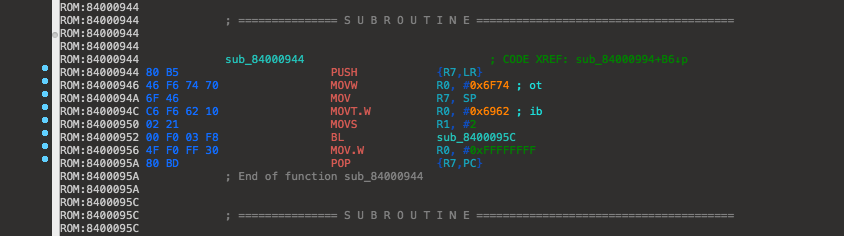

NOR method is where we use NOR and LLB to bootstrap iBEC and load the filesystem, which we've patched to utilize the upgrade command.
We can also use this method because we can use LLB to find and decrypt a file with the tag of "ibec," which would be the one that we've patched,
to load iBEC. NOR is where our files are stored when we restore, and used to boot the device. So, this means we have to restore using this method.
There really isn't a benefit versus using multi_kloader to bootstrap iBSS + iBEC. If you do not want to go through restoring, then this method is not for you,
at least from the beginning. If you have already, and successfully dualbooted, then this is another method that you can learn and get some experience in patching various iBoot's.
./reimagine Firmware/all_flash/all_flash."device".production/LLB."device".RELEASE.img3 LLB.raw -iv -k -r
./iBoot32Patcher LLB.raw LLB.prepatched -r
Open LLB.prepatched in IDA, select ARM as the processor, and do everything else that we do we each iBoot.
LLB and iBSS share the same rebase. Analyze the code and rebase the program to 0x84000000.
Scroll down from the top of the file (code) until you find this. Should be around 0x800-0xA00

We need to change "MOVW R0, #0x6F74" to "MOVW R0, #0x6563" This is because LLB looks
for a file in NOR with the tag of ibot. In normal routines, LLB decrypts and loads iBoot.
We need LLB to load iBEC. In order to do this, we need to change the value in LLB to load
iBEC instead. This is accessible by changing the value of "ot" to "ec", since we don't need
to change "ib." Also, as you can see, tags are also in Little-Endian. Make sure the first
value is "ec" and not "ib." Change "46 F6 74 70" to "46 F2 63 50."
Like the other iBoot's, produce a dif file, and then apply the dif with ida_patcher.
./ida_patcher -i LLB.prepatched -p LLB.dif
Save the patched LLB, with the patched iBEC (or make another if already removed) place it in Firmware/all_flash/all_flash."device".production/
Rename your patched iBEC with a custom name. As in Nyan's guide, we can just rename it as iBoot2.img3. Open manifest with nano or some text viewer.
Add the name of the patched iBEC, in this case we name it to iBoot2.img3. Save, then repack everything into a .ipsw archive, and then restore.